Ticket 760 · Contabilidad · Cierre de meses y cierre del ejercicio
El cierre contable ahora funciona de punta a punta
Guía de presentación — qué estaba mal, qué cambia en el uso diario, cómo se cierra un mes y un ejercicio paso a paso, y qué pasa el día que instalamos la versión
1. Qué estaba mal
Revisando el cierre contable antes de encarar las modificaciones de comprobantes confirmados
(ticket 758), encontramos que la base sobre la que se apoya ese trabajo no se cumplía. Antes de
decir "todo se puede modificar mientras el mes esté abierto" necesitábamos que "mes
cerrado" significara lo mismo en todas las pantallas. No era así:
El cierre del ejercicio no se podía hacer. Pedía tener los meses cerrados
pero el bloqueo de períodos no los marcaba como cerrados, y a las empresas creadas en los
últimos meses les faltaba el ejercicio. Al destrabarlo vimos además que el asiento de apertura
iba a salir desbalanceado, que el Balance del año nuevo iba a mostrar los saldos al doble y que
el Estado de Resultados del año cerrado iba a dar cero. Lo corregimos todo antes de que te
pasara.
El bloqueo de períodos no frenaba todo. Los asientos manuales miraban una
cosa, las facturas y recibos otra, y los movimientos bancarios, los de fondos, las
transferencias y los asientos recurrentes no miraban nada: se podían cargar en un mes
bloqueado. Y desbloquear el primer mes del año nuevo reabría el año ya cerrado.
Fechas que podían correrse un día. Según la hora y el servidor, un asiento
del día 1 podía caer en el mes anterior, y una anulación hecha a la noche quedaba fechada al día
siguiente.
Anular desde Asientos el asiento de una factura dejaba la factura vigente
sin su asiento, y la anulación no copiaba clientes, proveedores ni centros de costo.
Antes
Cada pantalla decidía a su manera si un mes estaba cerrado; el cierre anual no corría; un
mismo asiento podía caer en meses distintos según la hora.
Ahora
Una sola regla para todo lo que genera asientos: si el mes o el ejercicio están cerrados,
no entra nada con esa fecha, y el mensaje dice qué mes es y dónde reabrirlo. El cierre anual
se ejecuta y deja los reportes correctos.
2. Qué cambia en el uso diario
1Los meses se cierran de a
uno y en orden, desde Contabilidad → Configuración → Bloqueo de Períodos. Solo se puede
cerrar el primer mes abierto.
2Antes de cerrar un mes hay
que registrar o eliminar sus borradores. El sistema te muestra cuántos hay y te ofrece
registrarlos todos y cerrar en un solo paso.
3Un mes cerrado no acepta
nada con esa fecha: ni asientos manuales, ni facturas, recibos, órdenes de pago,
egresos, movimientos de fondos o bancarios, transferencias, depreciaciones o asientos
recurrentes.
4Para corregir algo de un
mes cerrado, hay que reabrir el último mes cerrado (y, si el error es más atrás,
seguir reabriendo de a uno). Los meses de un ejercicio ya cerrado no se reabren nunca.
5El asiento de un
comprobante se anula desde el comprobante, no desde Asientos. Desde Asientos se anulan
los asientos manuales, con fecha de hoy.
3. Paso a paso: cerrar un mes
En el ejemplo, la empresa trabaja el ejercicio 2025: enero y febrero ya están cerrados y marzo
tiene tres asientos en borrador. Los datos de todas las capturas son de ejemplo.
Entrá a Contabilidad → Configuración, sección Bloqueo de Períodos. Cada mes
tiene su candado. Arriba dice hasta qué fecha está cerrado. El primer mes abierto dice
Cerrar y, si tiene borradores, cuántos; el último cerrado dice
Reabrir. Los demás no se pueden tocar.
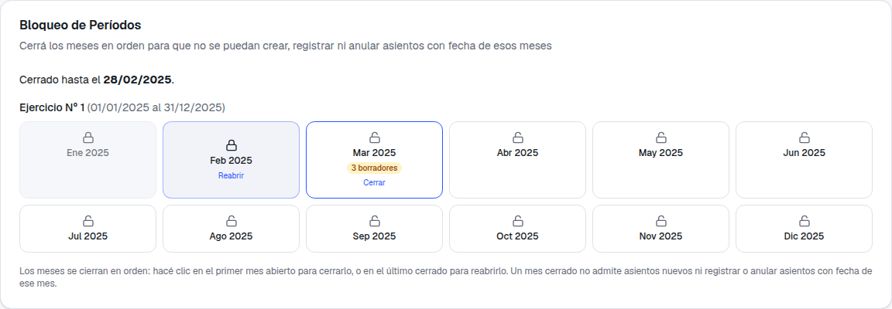
Enero y febrero cerrados; marzo es el próximo a cerrar y tiene 3 borradores.
Hacé clic en marzo. Como tiene borradores, el diálogo te lo dice y el
botón es Registrar los 3 borradores y cerrar: se registran todos
juntos y se cierra el mes en un solo paso.
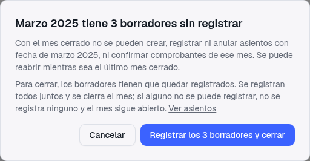
Si un borrador no se puede registrar, no se registra ninguno. El mes sigue
abierto y el mensaje te dice cuál es y por qué. En el ejemplo, el borrador N° 12 usa una
cuenta que no es imputable (tiene subcuentas).
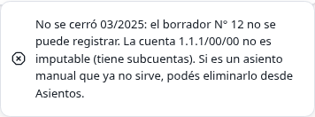
Corregí el borrador. Si es un asiento manual que ya no sirve, eliminalo desde
Contabilidad → Asientos, menú de la fila, Eliminar borrador. Si es
el borrador de un comprobante, se corrige desde el comprobante o desde Configuración.
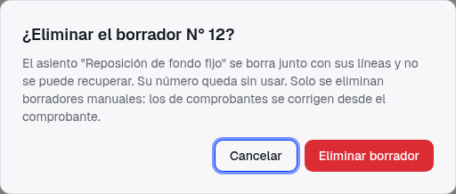
Su número queda sin usar.
Volvé a cerrar. Ahora quedan 2 borradores: se registran y marzo queda
cerrado. Abril pasa a ser el próximo y marzo ofrece Reabrir.
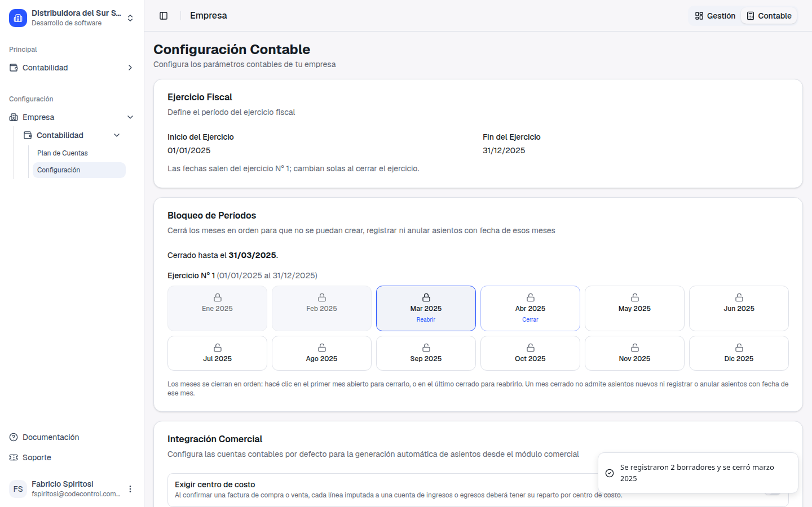
Reabrir para corregir
Para corregir algo de un mes cerrado hacé clic en el último mes cerrado y confirmá. Se reabre
de a un mes, empezando por el último. Si dos personas trabajan a la vez y una tiene la pantalla
desactualizada, el sistema igual respeta el orden y se lo avisa.
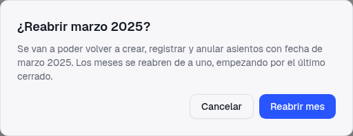
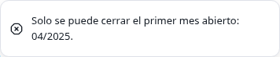
Una segunda pantalla, abierta antes del cierre de marzo, intenta cerrarlo de
nuevo: el sistema responde cuál es el mes que corresponde.
4. Un mes cerrado no acepta nada con esa fecha
Da igual desde qué pantalla: un asiento manual, una factura, un recibo, una orden de pago, un
egreso, un movimiento de fondos o bancario, una transferencia, una depreciación o un asiento
recurrente con fecha de un mes cerrado no se graba, y el comprobante queda como
estaba (en borrador). El mensaje es siempre el mismo: la fecha, el mes cerrado y dónde
reabrirlo.
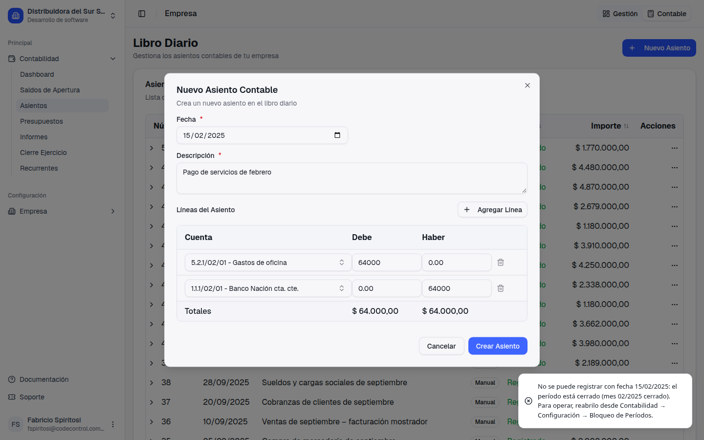
Un asiento manual con fecha 15/02/2025, con febrero cerrado: no se crea.
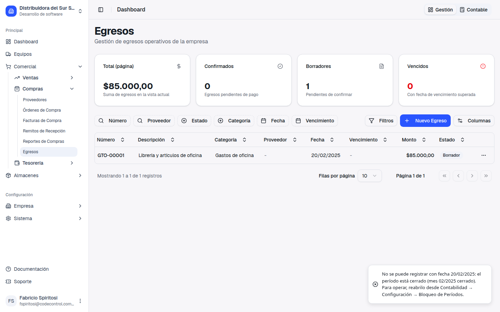
Confirmar el egreso GTO-00001 del 20/02/2025: no se confirma y sigue en
Borrador, sin asiento. Lo mismo con facturas, recibos y órdenes de pago.
5. Paso a paso: cerrar el ejercicio
Entrá a Contabilidad → Cierre de Ejercicio. Ves el ejercicio abierto más
antiguo y lo que falta para cerrarlo, con un link para resolver cada punto: la cuenta de
Resultado del Ejercicio configurada, todos los meses cerrados y ningún borrador.
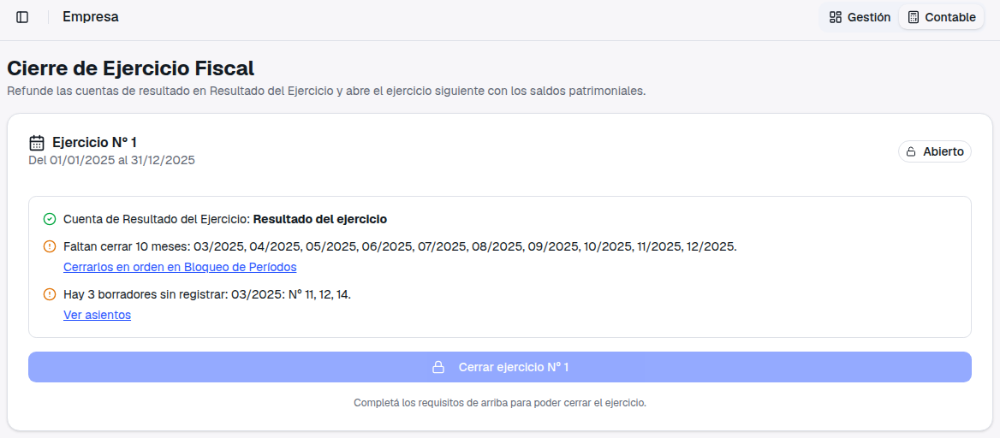
Con todo en verde se habilita el botón. En el ejemplo se cerraron los meses
de abril a diciembre.
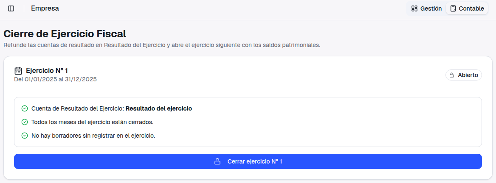
Revisá la vista previa. Muestra ingresos, gastos y el resultado, el asiento
de refundición (lleva ingresos y gastos a Resultado del Ejercicio al 31/12) y, desplegable, la
apertura del ejercicio siguiente al 01/01.
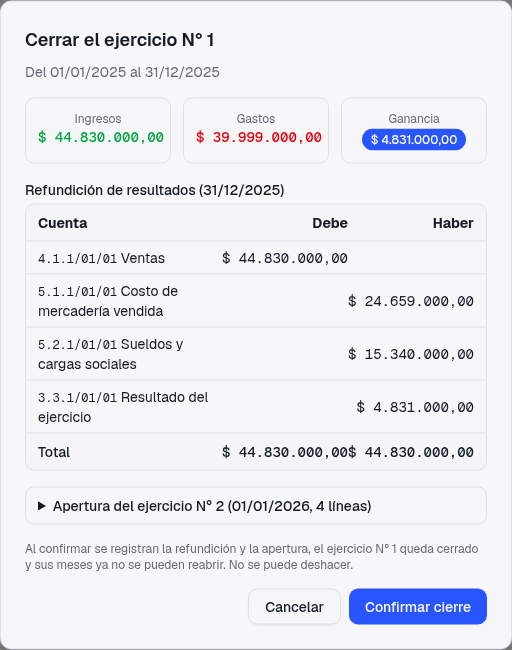
Confirmá. Se registran la refundición y la apertura y el ejercicio queda
cerrado. No se puede deshacer. La pantalla pasa al ejercicio siguiente y
deja a la vista los números de los dos asientos.
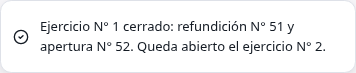
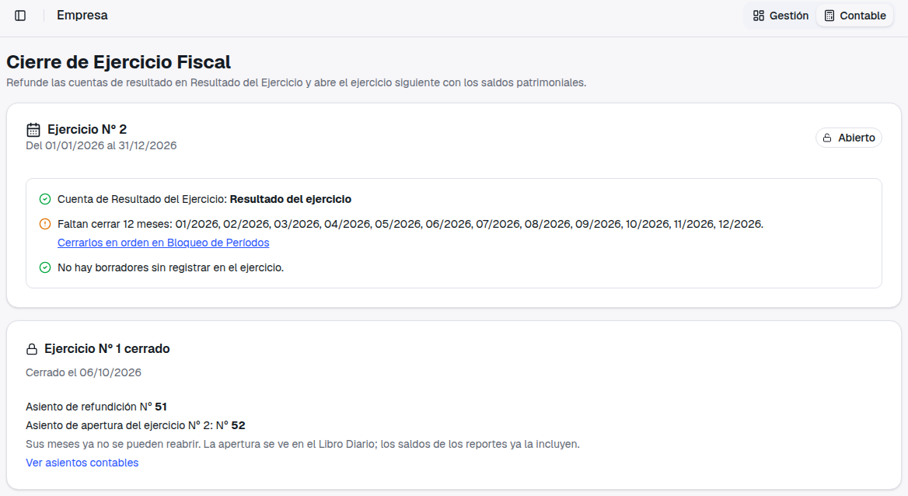
Los reportes después del cierre
El Balance del ejercicio nuevo arranca con los mismos saldos con los que terminó el anterior,
sin duplicarse, y el Estado de Resultados del ejercicio cerrado sigue mostrando sus ingresos y
gastos (no da cero por la refundición).
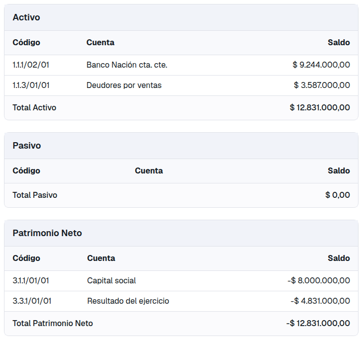
Balance al 31/01/2026: activo de $ 12.831.000, el mismo que al 31/12/2025, y
el resultado ya dentro del patrimonio.
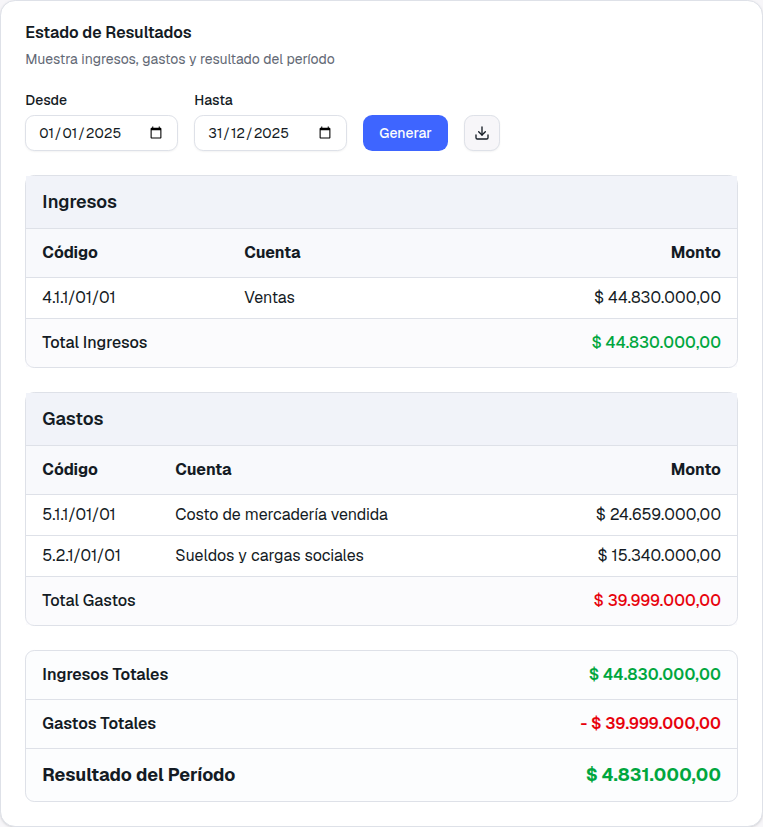
Estado de Resultados 2025 después del cierre: ganancia de $ 4.831.000.
El aviso "El balance no está equilibrado"
Si al generar el Balance General ves arriba ese aviso en rojo, no tiene que ver con esta
entrega ni con tus saldos: es un detalle anterior de cómo ese informe compara el activo con el
patrimonio (con signos opuestos). Lo dejamos anotado para corregirlo aparte.
Antes y después de cerrar
Podés operar en el ejercicio nuevo antes de cerrar el anterior (por
ejemplo, cargar las facturas de enero mientras terminás diciembre): el sistema crea el ejercicio
solo con la primera operación.
Después del cierre, Bloqueo de Períodos muestra el ejercicio nuevo y avisa que los meses del
cerrado ya no se pueden reabrir.
Las fechas del ejercicio en Contabilidad → Configuración ya no se editan una vez que hay
movimientos: salen del ejercicio abierto y cambian solas al cerrarlo.
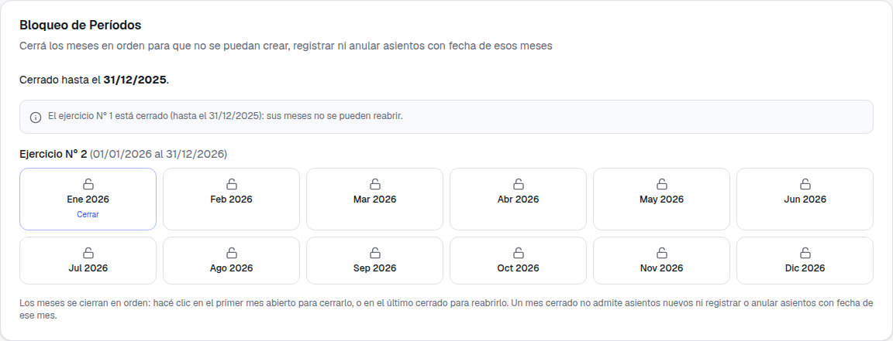
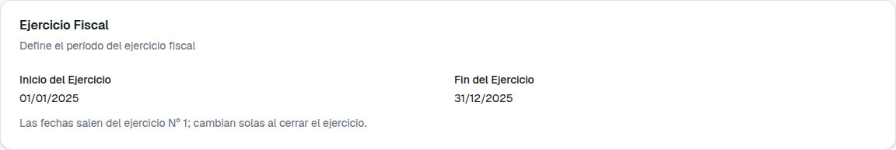
Fechas del ejercicio, de solo lectura.
6. Anular y eliminar asientos
En Contabilidad → Asientos, el menú de cada fila tiene Anular para
los asientos registrados y Eliminar borrador para los borradores
manuales.
Anular crea un asiento con los importes invertidos, copiando clientes,
proveedores y centros de costo. Se registra con fecha de hoy (la de Argentina,
aunque sea de noche): el diálogo te la muestra antes de confirmar. El mes del asiento original y
el de hoy tienen que estar abiertos.
El asiento de un comprobante (factura, recibo, orden de pago, egreso,
movimiento de fondos, depreciación, revalúo o cierre de ejercicio) no se anula desde Asientos:
el diálogo dice a qué comprobante pertenece y el botón queda deshabilitado.
Los asientos automáticos sin comprobante (movimientos bancarios, transferencias, baja de un
equipo) se pueden anular, con un aviso: la anulación no revierte el saldo del banco ni el estado
del equipo.
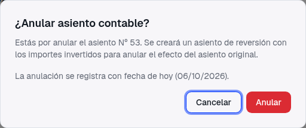
Asiento manual: se anula con fecha de hoy.
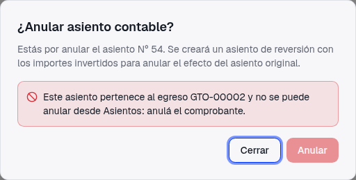
Asiento del egreso GTO-00002: se anula desde el comprobante.
Varios comprobantes todavía no tienen anulación propia
Hoy no hay forma de anular un recibo, una orden de pago, un movimiento de fondos o una
depreciación ya confirmados, y anular una factura o un egreso no revierte su asiento. Eso es lo
que resuelve el próximo ticket (758, modificar y anular comprobantes confirmados mientras el mes
esté abierto). Mientras tanto, esos asientos se corrigen como hasta hoy.
7. En el celular
Las dos pantallas nuevas se adaptan al ancho del teléfono: la grilla de meses pasa a tres
columnas y la lista de requisitos del cierre se acomoda debajo.
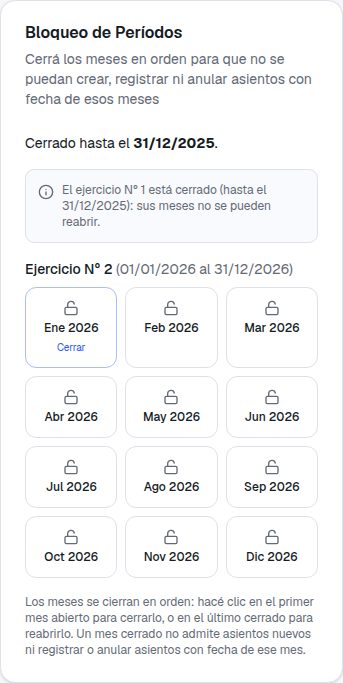
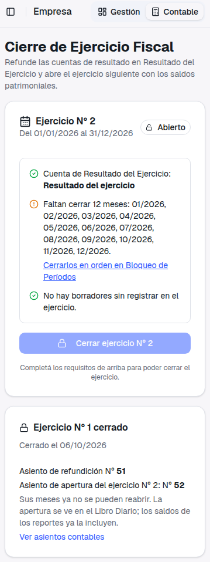
8. Qué pasa el día que instalamos la versión
Al instalar, el sistema completa por única vez los datos que faltaban, sin cambiar importes,
fechas ni números de ningún asiento:
Se completan los ejercicios y los meses de cada empresa a partir de las
fechas del ejercicio de Contabilidad → Configuración, y cada asiento queda asociado a su
ejercicio y su mes.
Si tu empresa tenía bloqueados meses con el bloqueo anterior, esos meses
quedan cerrados con la regla nueva (y también los anteriores a ellos, para que
se cumpla el orden). Bloqueado hasta una fecha sigue siendo cerrado hasta esa fecha.
Borradores en meses que quedan cerrados: si hay asientos en borrador (por
ejemplo, de facturas o recibos confirmados) con fecha en un mes bloqueado, ya no se van a poder
registrar sin reabrir ese mes. Antes de instalar revisamos tu base y, si aparece alguno, te
pasamos el listado para decidir juntos si se reabren los meses o se dejan como están.
Movimientos de meses bloqueados: lo que antes "pasaba" en un mes bloqueado
(un movimiento bancario, de fondos o una transferencia) ahora pide reabrir el mes. Es lo
esperado.
Qué conviene que hagas después
Mirá Contabilidad → Configuración → Bloqueo de Períodos y Contabilidad → Cierre de
Ejercicio: te dicen qué meses están abiertos y qué borradores faltan registrar.
Verificá que esté cargada la cuenta de Resultado del Ejercicio en
Configuración: sin ella no se puede cerrar el ejercicio.
Para el primer cierre anual real, el del ejercicio 2026: a medida que avance el año,
registrá los borradores de cada mes y cerrá los meses en orden. Así, en 2027, el cierre del
ejercicio es un solo clic.
9. Qué queda para el próximo ticket (758)
Con esta base, el ticket 758 resuelve modificar y anular comprobantes ya
confirmados (facturas, recibos, órdenes de pago, egresos, movimientos de fondos)
mientras su mes esté abierto, con el asiento que se corrige solo. Esta entrega no cambia cómo se
modifica un comprobante confirmado.
10. Qué no cambió
✓Los asientos automáticos siguen
naciendo en Borrador y hay que registrarlos para que sumen en el
Mayor y el Balance. Ahora, además, el cierre del mes te ofrece registrarlos todos juntos.
✓La pantalla de Bloqueo de Períodos
se usa igual: clic en el primer mes abierto para cerrar, en el último cerrado para
reabrir.
✓Los asientos ya registrados no
cambian: ni sus importes, ni sus fechas, ni sus números.
✓Quién puede hacer cada cosa es lo
mismo que antes: cerrar y reabrir meses, quien puede editar la Configuración contable; registrar
borradores, quien puede registrar asientos; cerrar el ejercicio, quien tiene ese permiso.